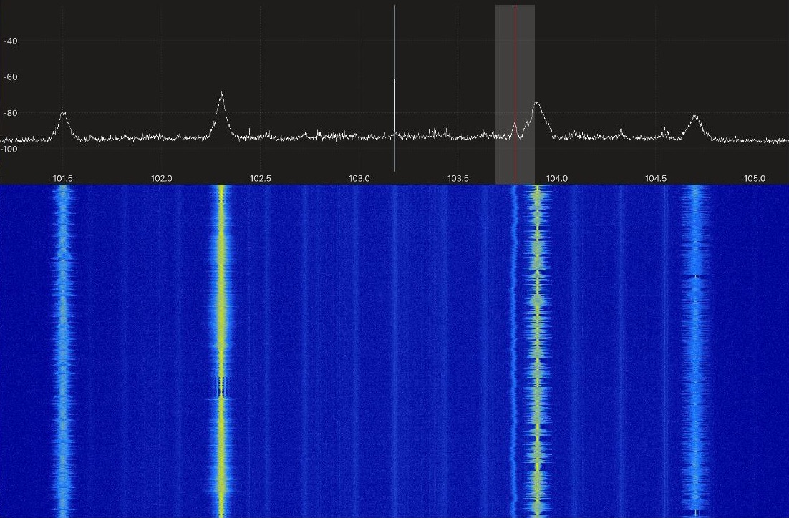
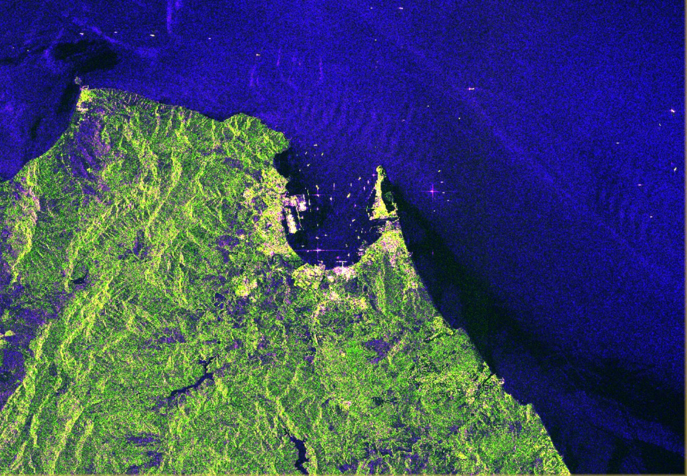
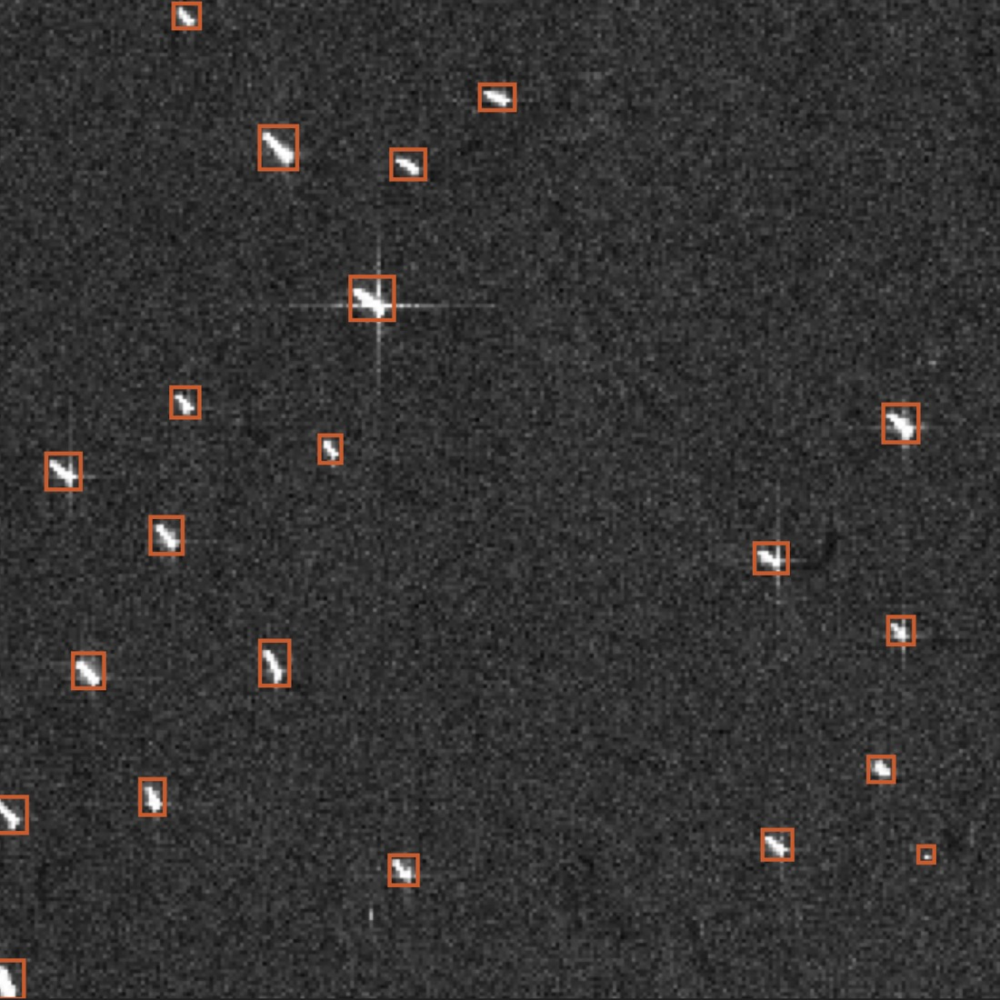
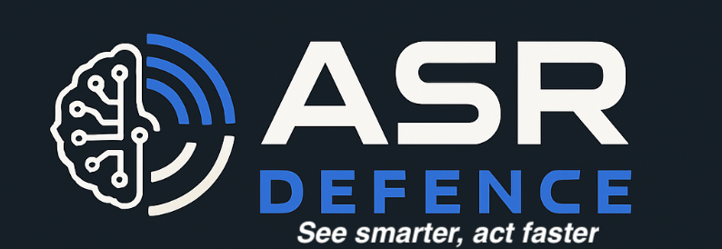

TacEdge 2026
Sensing, communications and autonomy in contested environments.
TacEdge is a one-day workshop on sensing, communications and autonomy in contested environments, with invited talks in the morning and hands-on tutorials in the afternoon. The subjects are RF and optical surveillance, tactical telecommunications and applied AI in the field.
The tactical edge is where equipment has to work with contested spectrum, unreliable links and limited on-board computing.
The morning has two keynotes and four short talks. It is free and open to everyone. In the afternoon, each participant attends two of four hands-on tutorials. The tutorials are in addition to the talks, so a paid ticket covers the whole day. It is limited to 80 places.
The workshop is for people who are not specialists in these fields. It suits Defence and defence-industry staff, researchers and students who want to understand current methods and their limits.
TacEdge 2026 is the first of what is intended to become an annual workshop.
Anyone with no programming background can now build a working simulator or a simple surveillance tool by describing it to a large language model in a chat. The approach breaks down as the work grows. An error made early in a long conversation is carried into everything that follows, and the model reports wrong results with the same confidence as correct ones.
Multi-agent systems split the work between several models. Each has one role, its own instructions, tools and context, and a defined point at which it stops. This talk explains how such systems are put together. It covers how the agents are connected (as a chain, star, mesh or hierarchy), whether they exchange messages in a shared context or through files on disk, and whether an orchestrator or the agents themselves decide what runs next. It also explains why checking needs separate agents, and why those agents do not remove the need for checks written as ordinary programs. The main example is a pipeline of twenty agents, ten of which only check, with 88 automated quality gates between them; it was used to draft textbooks for three courses at UNSW Canberra. The last part of the talk applies the same design to building simulations and surveillance systems.
Dr Artem Lensky is a Lecturer in the School of Engineering and Technology at UNSW Canberra. He teaches computational problem solving to undergraduate students, and courses in Fundamentals of Surveillance Technologies as well as Communication and Information Systems for graduate students. With over 20 years of experience in Korea and Australia, his research spans machine learning, signal processing, computer vision, natural language processing, and biomedical signal analysis. He is the founding Chair of the Australia Section of the Korean Institute of Communications and Information Sciences.
Jonathan Glover is an Army officer with a background in civil engineering and project management. Jack Lund is a Navy officer with a background in aeronautics and aircraft maintenance. Both are postgraduate students at UNSW Canberra.
AI-enabled systems now support autonomy and decision-making in operational Defence environments, under uncertainty, adversarial action and time pressure. Their behaviour is learned from data rather than explicitly programmed, and may be shaped by development decisions made long before deployment. This talk looks at AI assurance from a practitioner’s perspective: why conventional verification and validation struggle with machine learning, what further evidence operational use requires, and how technical assurance connects to operational accountability. Drawing on experience in high-reliability organisations, operational test and evaluation, and safety-critical systems, it sets out a set of assurance precepts and a practical framework for assurance across the capability lifecycle.
GPCAPT Randall McCutcheon is a member of the Royal Australian Air Force and the 2026 Chief of Defence Force Fellow. He is a Flight Test Engineer with over 20 years of experience. Randall was appointed a Member of the Order of Australia for exceptional service in the Australian F-35 program and was awarded the United States Defense Meritorious Service Medal for supporting Initial Operational Test and Evaluation of the F-35. Randall is a doctoral candidate in Systems Engineering at the University of New South Wales.
Modern radars are increasingly software-defined, multifunction and adaptive, and their transmissions can change rapidly as they search, track and respond to their environment. For Electronic Support, identifying an emitter remains essential, but understanding what it is doing, and what its changing behaviour means, is becoming equally important. This presentation, developed with Phil Guy, Managing Director of Mellori Solutions, introduces the emerging Signals to Behaviours approach: using sequences of RF observations to infer activities, recognise changes in operating patterns and investigate relationships between emitters, while distinguishing evidence from inference and uncertainty. It then considers how operators will work alongside machine inference: what automated systems should explain, when an assessment should be challenged, and what this means for situational awareness, workload, training and decision-making.
Dr Len Sciacca is Chief Scientist at Mellori Solutions and CEO of ASR Defence. He formerly led the Electronic Warfare and Radar Division of Australia’s Defence Science and Technology Group. His work spans cognitive radar, electronic warfare, signal processing and autonomous systems. With Phil Guy, a former RN and RAN EW operator, his current focus is Signals to Behaviours to Intent: connecting observed RF activity with emitter behaviour and operational understanding.
Terahertz (THz) communications offer abundant spectrum, ultra-wide bandwidths and highly directional transmission, making them a key enabling technology for 6G and beyond. These properties also open the way to integrated sensing and communication (ISAC), where communication and sensing are designed together so that wireless systems can perceive their surroundings. The talk introduces THz communications in 6G, reviews recent advances in THz ISAC, and discusses key challenges and the open problems in turning its theoretical potential into practice.
Prof. Nan Yang is a Professor at the Australian National University, where he leads the Information and Signal Processing Cluster in the School of Engineering. He is an IEEE Vehicular Technology Society Distinguished Lecturer (2025-2027) and was an IEEE ComSoc Distinguished Lecturer (2023-2024). He is a co-recipient of Best Paper Awards at IEEE ICC 2024 and IEEE GLOBECOM 2022 and 2016. His research interests include terahertz communications, ultra-reliable and low-latency communications, cyber-physical security and molecular communications.
Rhys Kissell is the founder and CEO of Panop, a Canberra-based company building cognitive, software-defined electronic warfare systems. He has spent time in Kyiv and Lviv engaging directly with Ukraine’s defence technology ecosystem. Prior to founding Panop, he served with the Royal Australian Navy, was the engineering lead on the LAND 156 Counter-UAS program, and worked as a SOCOMD contractor. He is a two-time winner of the AOC Australia-New Zealand Information Warfare Essay Competition.
Provisional. Sessions and timings are subject to change. Session times include introductions and questions.
Four tutorials run in parallel, one in each room, and each runs twice. Every participant attends two of the four, and gives a first and second choice when registering. Each room takes up to 20 people per session. No prior experience with radio, radar or machine learning is assumed. Bring a laptop.

An introduction to software-defined radio and spectrum monitoring. Participants capture a live band with an SDR receiver and learn to read the waterfall display: which signals are present, when they transmit and how much bandwidth they occupy.
Led by Dr Edwin Peters and Timothy Bateman

How to use open satellite imagery as an intelligence source. Participants process Sentinel-1 radar data (calibration, speckle reduction and terrain correction) and compare the result with optical imagery of the same area.
Led by MAJ Matthew Hume and Dr Lily Qiao

Participants train YOLO and similar detectors on real imagery and examine the confidence scores they report, including cases where a confident detection is wrong. The session then shows how an ensemble of detectors reduces misclassification and the number of detections an operator has to check by hand.
Led by Muhammad Saeed and Drew Stevenson
A scenario-based workshop on how AI and autonomous systems could change the relationship between people and machines in contested, resource-constrained environments. Working in small groups, participants use a structured Prepare-Make-Reflect process to build scenarios involving people, AI systems, autonomous platforms and their operating environment. They then examine how sensing, communications, autonomy and decision-making interact, considering human oversight, trust, responsibility, operational dependencies and unintended consequences.
Led by Dr Josh Andres
Dave Furtado, CPEng, CSEP, is a systems engineering specialist with over 15 years of experience across the defence, aerospace and telecommunications sectors. His expertise encompasses tactical data links, mission-critical systems, systems architecture, integration, verification and validation, and technical certification. He brings extensive experience in complex systems integration, interoperability and capability development across multidisciplinary engineering environments.
Dave is currently undertaking PhD research at UNSW Canberra through the Defence Trailblazer Program, focusing on autonomous data-driven modelling, automated digital twin generation and machine learning for advanced satellite constellation management. His professional and research interests span advanced systems engineering, artificial intelligence, digital engineering and space technologies, with a focus on advancing intelligent, adaptable and scalable solutions for complex aerospace and defence systems.
Dr Huanneng Qiu is a research engineer specialising in data processing and data-driven autonomous systems. Huan holds a PhD in machine learning and autonomous robotics from UNSW Canberra and has worked across robotics and space research domains. His work spans the development of AI-driven perception systems, computer vision, and geospatial data processing pipelines.

In person only, in the centre of Canberra. Attendees are expected from Korea, Taiwan, the Philippines and Vietnam. International visitors should arrange visas early.
The morning talks are free. The afternoon tutorials are in addition to the talks, so a paid ticket covers the whole day.
Full-day fee in AUD, GST inclusive
Group registration is possible. A small number of tutorial places may be offered free of charge to selected participants.
Registration is through UNSW’s Eventbrite page. Payment is by Eventbrite only. Invoices and bank transfers are not accepted. Refunds can be requested within 7 days of purchase. Registration is subject to the UNSW ticketing terms and conditions.